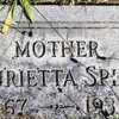

12 January 1867 – 23 September 1931
Philip’s public FamilySearch profile names Henrietta as his mother and lists an Ohio birth source, census and marriage sources; Adam’s profile repeats her in the same five-child family group. This is a supported working parent assignment (~80% confidence), not an independently inspected birth certificate.
The only image located for Henrietta is a 200×200 FamilySearch-linked image crop reading in part “MOTHER HENRIETTA SPI…” with dates consistent with the public tree. The profile shows no named uploader or cemetery. It appears to be a gravestone fragment; it is archived and captioned as such, not as a portrait or verified burial site.
No sibling group for Henrietta is shown on the reviewed public profile; no siblings are invented. FamilySearch-attached census, marriage and death thumbnails are archived under sources/record-thumbnails/.
12 January 1867 – 23 September 1931 · Dates reported in the public FamilySearch tree; original vital record not reviewed in this pass.
Family group · See the immediate-family panel and dated source audit.
Henrietta Wittner is named as Philip Adam Spiess’s mother in the public FamilySearch family group and as Adam Spiess’s wife. A FamilySearch profile image appears to be a close crop of a marker naming “Mother Henrietta Spi…,” but no cemetery or photographer is identified.

Locate full-resolution original birth, marriage, death and cemetery records for Henrietta.
Do not treat the small tree photo as a verified grave location or portrait.
No DNA evidence linked.
Generation VII · family-history working assignments identified separately from independently reviewed records.